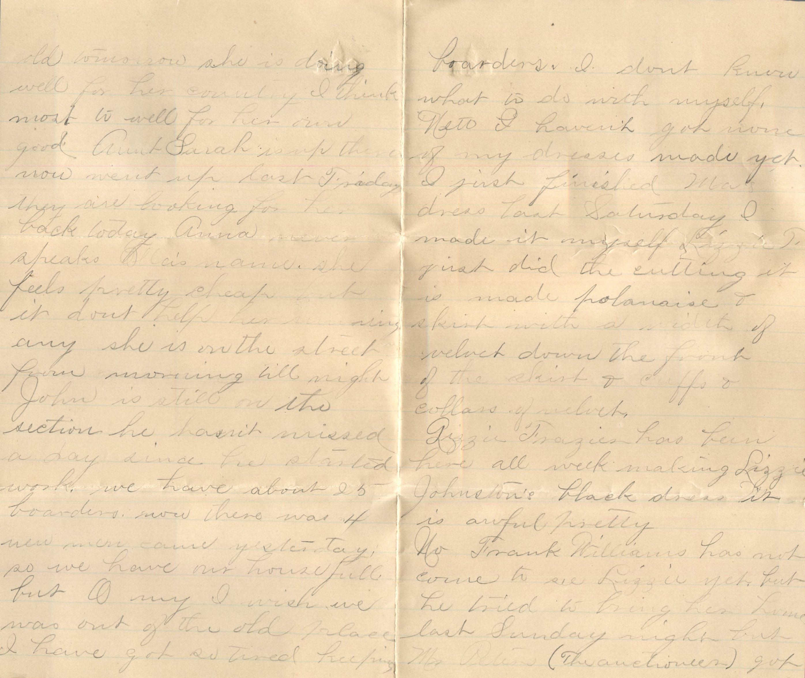
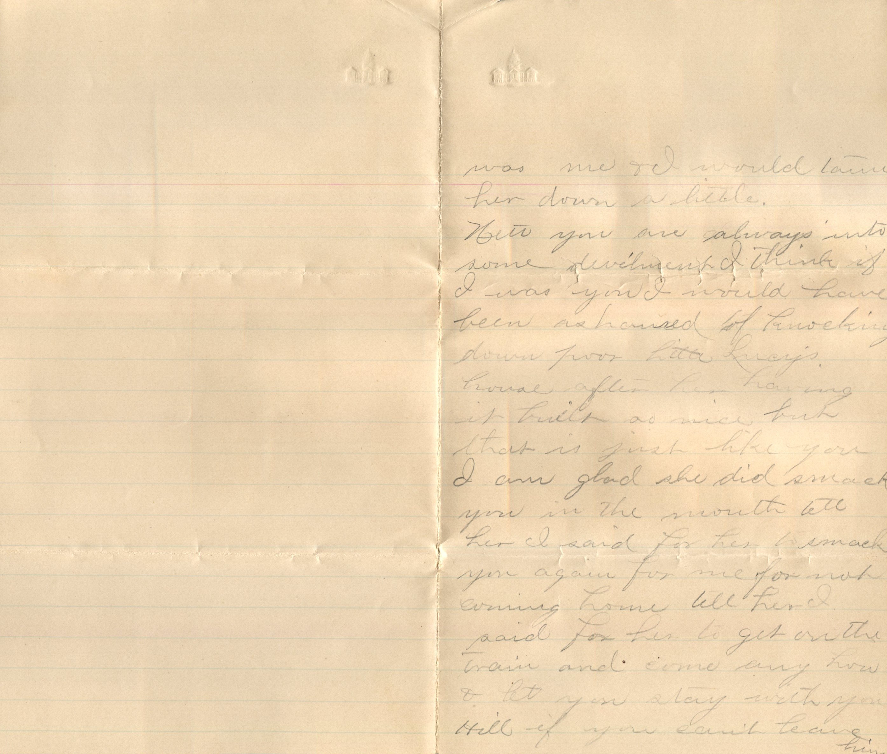
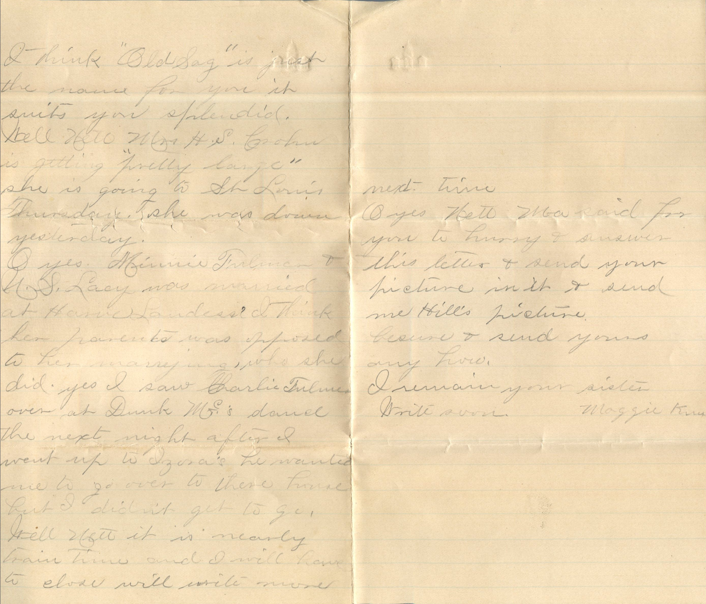
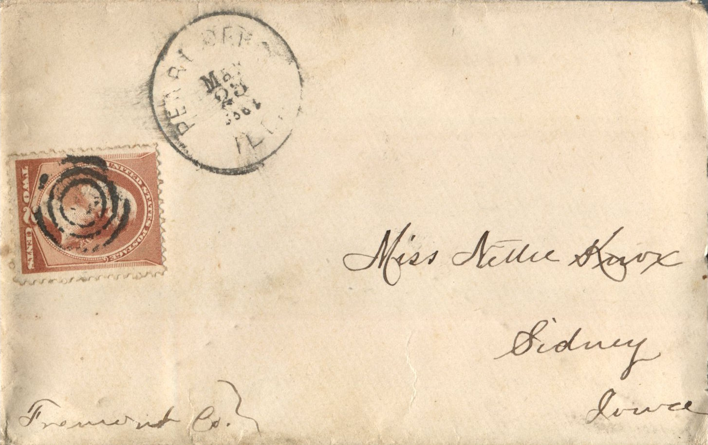
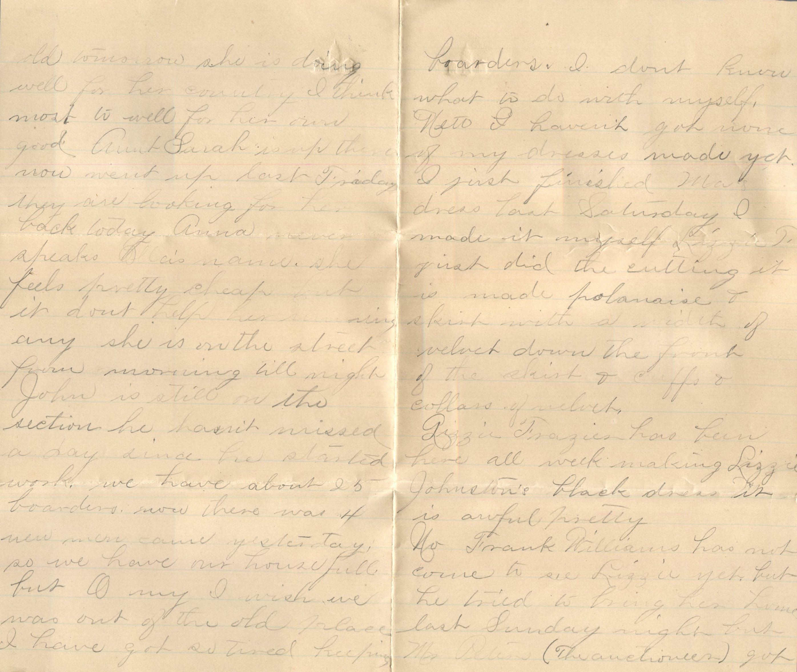
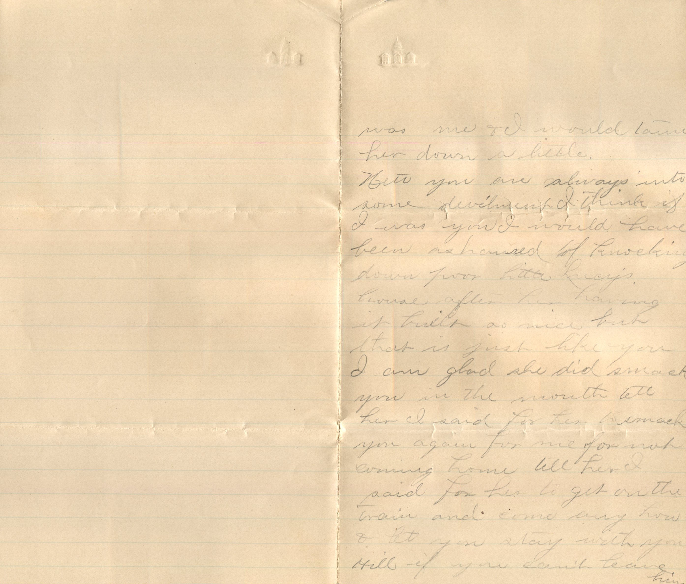
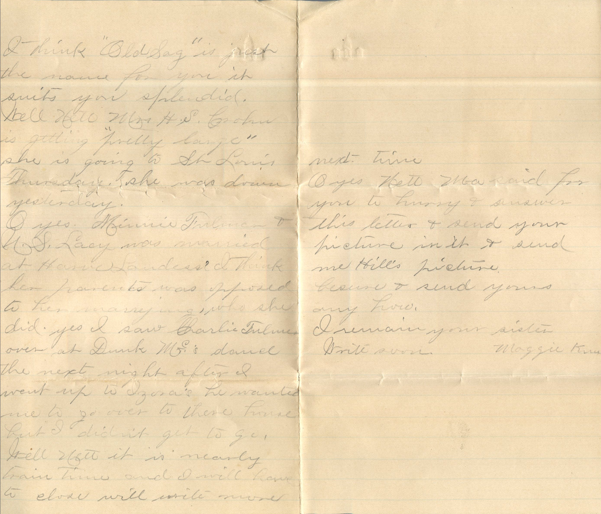
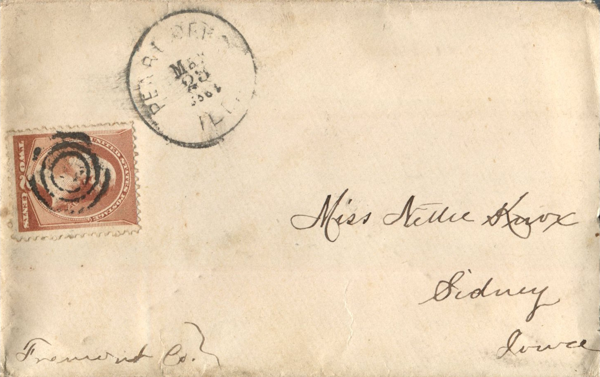

From: Maggie Knox, To: Jeanette Knox Chandler
 
From: Maggie Knox, To: Jeanette Knox Chandler Mailed From: Pearl, Illinois on March 23, 1886
Miss Nettie Knox Sidney, Iowa Fremont Co
Pearl, Ills Mch 23rd, '86 Miss Nettie Knox Dear Sister, I will now attempt to answer your kind letter which I received on the 20th just and was glad to hear of you all being well as it leaves us all at present. Well Nett we had a big snow last Sunday night but it is all gone now and nice and warm but the mud is not entirely dried up yet. Well Nett, Mrs. Ella Betts has got a big 9 and 1/2 lb girl born on the 10th. Will be 2 weeks old tomorrow. She is doing well for her country. I think most to well for her own good. Aunt Sarah is up there now. Went up last Friday. They are looking for her back today. Anna never speaks Ella's name. She feels pretty cheap but it don't help her running away any. She is on the street from morning till night. John is still on the section. He hasn't missed a day since he started work. We have about 25 boarders. Now there was 4 new men come yesterday, so we have our house full but oh my I wish we was out of the old place. I have got so tired keeping boarders. I don't know what to do with myself. Nett I haven't got none of my dresses made yet. I just finished Ma's dress last Saturday. I made it myself. Lizzie T just did the cutting. It is made polonaise and skirt with a width of velvet down the front of the skirt and cuffs and collars are velvet. Lizzie Frazier has been here all week making Lizzie Johnston's black dress. It is awful pretty. No Frank Williams has not come to see Lizzie yet but he tried to bring her home last Sunday night but Mr. Peters (the auctioneer) got in ahead of him but you bet Lizzie didn't want Peters a bit. Oh Nett if you could just see Stuart the way he sneaks past the door he never looks in no more than if he knew any one. Yes you bet when Anna andI go up to Ella's I will write and tell you all the particulars like we will go next week it is just as Anna takes the motion. It don't seem like that Uncle Jim or Aunt Sarah see's her (Anna's) actions but I think I would if it was me I would tame her down a little. Nett you are always into some development. I think it I was you I would have been ashamed of knocking down poor little Lucy's house after her having it built so nice but that is just like you. I am glad she did smack you in the mouth. Tell her I said for her to smack you again for me for not coming home. Tell her I paid for her to get on the train and come any how and let you stay with your Hill if you can't leave him. I think "Old Saw" is just the name for you. It suits you splendid. Well Nett Mrs. H.S. Groin is getting "pretty large." She is going to St. Louis Thursday. She was down yesterday. Oh yes Minnie Fulmer and N.S. Lacy was married at Harrick Laudess. I think her parents was opposed to her marrying who she did. Yes I saw Charlie Fulmer over at Dunk Mc's dance the next night after I went up to Izora's. He wanted me to go over to their house but I didnt get to go. Well Nett, it is nearly train time and I will have to close. Will write more next time. Oh yes Nett, Ma said for you to hurry and answer this letter and send your picture in it and send me Hill's picture. Be sure and send yours any how. I remain your sister. Write soon, Maggie Knox